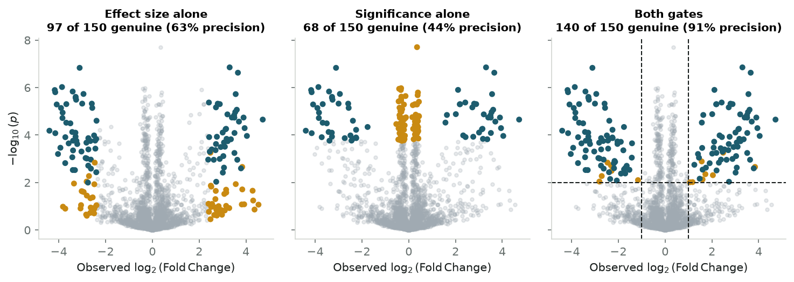
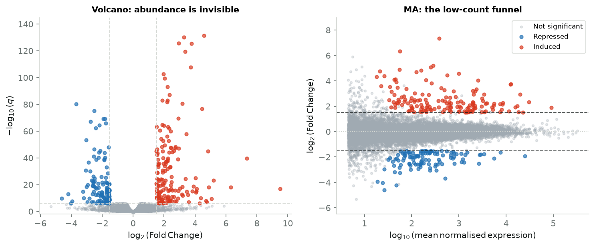

Effect size tells you how much a feature moved; p-values tell you how reliably it moved. Neither ranking is safe on its own, and a widget here lets you watch both fail.
Why statistical significance does not imply biological importance, how the log2 transform makes the two directions comparable, and how a pair of thresholds turns thousands of noisy hypotheses into a shortlist you can defend. With a screening simulation you drive yourself.
Bioinformatics
Statistics
Data Visualization
Genomics
Python
Author
Ravi Kalia
Published
August 19, 2026
An experiment measures twenty thousand things at once — expression of every gene in a tumour biopsy, abundance of every protein in a mass-spectrometry run, every engagement metric in a feature rollout. Out of that comes one number per feature for how much it moved, one for how sure you are it moved at all, and a request from your team for a shortlist worth chasing.
Rank that list by how much each feature moved and the top of it fills with the quietest, noisiest measurements in the assay, where an accidental jump of three counts reads as an eight-fold surge. Rank it by statistical certainty instead and the top fills with the loudest measurements, where a 7% shift is nailed down so precisely that it clears any significance bar you care to set — and is still a 7% shift, too small to change a cell or a product. Magnitude without certainty picks noise. Certainty without magnitude picks trivia.
A volcano plot is the two-dimensional answer: effect size along the horizontal axis, statistical significance up the vertical one, so a shortlist becomes a region of the plane rather than the head of a list. This post builds that plane from the two transforms it rests on, lets you drag its thresholds around a simulated screen, and then runs it over a real airway RNA-seq experiment.
One-dimensional rankings pick the wrong features
The failure is easiest to see in a screen where you know the answer. So we simulate one with four kinds of feature in it, which between them cover what a real assay contains: 1,785 unchanged background features with moderate noise; 765 low-abundance features that are also unchanged, but so noisy that chance alone throws them a large apparent fold change; 300 deeply measured features whose shift is real but tiny — 6% to 32% — and whose standard errors are small enough to make it overwhelmingly significant; and 150 genuine responders, moving 3- to 16-fold, which are the only features we want back.
Each feature is measured in four replicates per group and gets an ordinary two-sample \(t\)-test, with the variance estimated from those four rather than assumed — so a feature can clear the bar on a sample variance that came out small by luck, which is a failure mode the post comes back to. Then we hand each of three selection rules the same budget — the number of candidates the dual filter picks, so nobody wins by simply choosing more — and count how many of the 150 genuine responders each rule recovers.
Code
rng = np.random.default_rng(42)N, N_TRUE, N_MICRO, N_REP =3000, 150, 300, 4n_noisy =round(0.30* (N - N_TRUE - N_MICRO))n_null = N - N_TRUE - N_MICRO - n_noisydef block(size, lfc_lo, lfc_hi, sd_lo, sd_hi):"""Signed true log2 fold changes and per-replicate noise SDs for one population.""" lfc = rng.choice([-1.0, 1.0], size) * rng.uniform(lfc_lo, lfc_hi, size)return lfc, rng.uniform(sd_lo, sd_hi, size)populations = [ # (count, true |log2FC| range, per-replicate SD) (n_null, 0.00, 0.00, 0.21, 0.64), # unchanged background (n_noisy, 0.00, 0.00, 1.13, 2.55), # low-count, high-variance (N_MICRO, 0.08, 0.40, 0.03, 0.10), # real but negligible, measured precisely (N_TRUE, 1.50, 4.00, 0.28, 0.71), # genuine responders]drawn = [block(*p) for p in populations]true_lfc = np.concatenate([d[0] for d in drawn])sd = np.concatenate([d[1] for d in drawn])kind = np.concatenate([np.full(p[0], i) for i, p inenumerate(populations)])is_real = kind ==3# Measure every feature in N_REP replicates per group and run a real two-sample# t-test on the draws. Simulating the replicates rather than assuming a known# standard error is what makes the variance itself an estimate -- so a feature# can clear the bar on a lucky small sample variance, which is the failure the# post is about, and so adding replicates tightens the estimate instead of# merely shrinking a denominator.ctrl = rng.normal(0.0, sd[:, None], (N, N_REP))treat = rng.normal(true_lfc[:, None], sd[:, None], (N, N_REP))obs = treat.mean(axis=1) - ctrl.mean(axis=1) # observed log2 fold changet_stat, p_raw = stats.ttest_ind(treat, ctrl, axis=1)p_vals = np.clip(p_raw, 1e-16, 1.0)neg_log_p =-np.log10(p_vals)LFC_CUT, SIG_CUT =1.0, 2.0# |log2FC| >= 1, p <= 0.01dual = (np.abs(obs) >= LFC_CUT) & (neg_log_p >= SIG_CUT)budget =int(dual.sum())selections = {"Effect size alone": np.argsort(-np.abs(obs))[:budget],"Significance alone": np.argsort(p_vals)[:budget],"Both gates": np.flatnonzero(dual),}fig, axes = plt.subplots(1, 3, figsize=(10, 3.6), sharex=True, sharey=True)for ax, (name, picked) inzip(axes, selections.items()): ax.scatter(obs, neg_log_p, c=NEUTRAL_COLOR, alpha=0.25, s=10, rasterized=True) ax.scatter(obs[picked], neg_log_p[picked], s=18, rasterized=True, c=np.where(is_real[picked], PRIMARY, SECONDARY)) hits =int(is_real[picked].sum()) ax.set_title(f"{name}\n{hits} of 150 genuine ({hits /len(picked):.0%} precision)", fontsize=10) ax.set_xlabel("Observed $\\log_2(\\mathrm{Fold\\,Change})$")axes[0].set_ylabel("$-\\log_{10}(p)$")axes[2].axvline(LFC_CUT, color=INK, ls="--", lw=1)axes[2].axvline(-LFC_CUT, color=INK, ls="--", lw=1)axes[2].axhline(SIG_CUT, color=INK, ls="--", lw=1)plt.tight_layout()plt.show()print(f"Every rule below selects the same {budget} candidates.\n")print(f"{'':<20}{'genuine':>9}{'precision':>11}{'noise':>8}{'negligible':>12}")for name, picked in selections.items(): counts = np.bincount(kind[picked], minlength=4)print(f"{name:<20}{is_real[picked].sum():>9}{is_real[picked].mean():>10.0%}"f"{counts[1]:>8}{counts[2]:>12}")

Figure 1: Three selection rules on the same 3,000-feature screen, each given the same budget of candidates.
Every rule below selects the same 154 candidates.
genuine precision noise negligible
Effect size alone 97 63% 57 0
Significance alone 68 44% 0 85
Both gates 140 91% 9 0
Teal is a genuine responder, amber an impostor. All three rules spent the same budget of 154 candidates. Effect size alone returned 97 of the 150 responders, padded with 57 low-count artifacts. Significance alone did worse — 68 responders, alongside 85 features whose shift is real, certain, and far too small to act on. Requiring both gates returned 140 of the 150, at 91% precision against 63% and 44%.
The impostors each rule admits say why. Effect-size ranking took 57 noisy features and not one negligible-but-certain feature; significance ranking took 85 of the negligible ones and not a single noisy one. Each rule is blind along exactly the axis it does not use. Requiring both gates still leaves 14 impostors — nine low-count features and five unchanged background ones that cleared a \(p \le 0.01\) bar by luck across 3,000 tests. That residue is what multiple-testing control is for, and it is the last thing this post fixes.
The gates are yours to move
Those thresholds — a 2-fold change, \(p \le 0.01\) — are conventions, not laws, and the whole trade the volcano plot makes lives in how you set them. Tighten them and precision climbs while real hits fall off the list; loosen them and the reverse. The widget below re-runs the same four-population screen in your browser and lets you drag both gates, change the replicate count, and switch either axis to the alternative on offer. Every move re-scores all 3,000 features, and the comparison stays the one the figure used: the same budget, handed to each rule in turn.
Re-run the screenruns in your browser
Four things are worth doing to it before reading on. Drag the significance gate to zero: the filter degenerates into effect-size ranking and the amber low-count wings flood in. Drag the effect-size gate to zero instead and the plum band of negligible-but-certain features climbs into the selection. Raise the replicate count to 12 and watch two things happen at once: the plum band climbs straight up while staying exactly as far from the centre, because more data does not shrink a small effect, it only measures it better — and the amber wings pull inward, because more data does shrink an apparent effect that was only ever noise. And switch the vertical axis from raw \(p\) to a Benjamini–Hochberg \(q\), which is what turns a threshold picked by convention into one with a false-discovery guarantee behind it.
Microarray genomics forced dual filtering into existence
The plot exists because a generation of biologists ran into exactly this in the late 1990s. For decades molecular biology had studied genes one at a time, on Northern blots and by quantitative PCR, where a single hypothesis got its own dedicated assay and its own validation. High-density cDNA microarrays and Affymetrix GeneChips ended that: one hybridisation now queried the whole transcriptome, and researchers held expression estimates for 15,000 genes at once — with three to six replicates per condition, because reagents and tissue were expensive.
The first response was to threshold on fold change alone, declaring any gene that moved two-fold a hit. That ignored variance completely, and the literature filled with low-intensity, high-noise claims nobody could reproduce. The obvious correction — run a \(t\)-test on every gene and sort by \(p\)-value — failed in the opposite direction. At \(n =
3\), a sample variance can come out spuriously tiny by luck alone, handing a 10% change a \(p\)-value of \(10^{-6}\).
Neither number was safe by itself, and by the early 2000s several groups had converged on plotting them against each other. Work by Jin et al. (2001), Wolfinger et al. (2001) and Cui and Churchill (2003) established the form; Cui and Churchill named it, after the shape a genome-wide null makes — a wide caldera of unchanged genes with two eruption plumes rising on the flanks. That shape is not decoration. It follows from what the two axes do.
The log transform makes the two directions comparable
The raw ratio between a treated sample \(B\) and a control \(A\) is a lopsided coordinate. A doubling gives \(B/A = 2\); a halving gives \(0.5\). Upregulation has the whole interval \([1, \infty)\) to spread out in, while everything that went down is squeezed into the sliver \((0, 1]\). Plot raw ratios and a 10-fold increase sits nine units right of baseline while a 10-fold decrease sits nine tenths of a unit to the left — the widget’s raw-ratio axis shows this directly, and it is unusable.
The base-2 logarithm fixes it, because it turns multiplication into addition:
A doubling is \(+1\), a halving is \(-1\), a four-fold change is \(\pm 2\), and no change sits at zero. Equal biological moves in opposite directions are now equally far from the origin, which is what makes the plot’s left–right symmetry mean something.
The vertical axis gets a log too, for a different reason. Under the null that a feature is unchanged, the estimated log fold change \(\hat{\beta}\) scatters around zero with standard error \(\text{SE}(\hat{\beta})\), and the test statistic is \(t =
\hat{\beta}/\text{SE}(\hat{\beta})\). Tail probabilities fall off exponentially in \(t\), so raw \(p\)-values pile up against zero and become impossible to read. Taking \(-\log_{10}(p)\) spreads them out, and through the Gaussian tail approximation it also tells you the shape of the cloud:
Height grows with the square of the effect size, at a rate set by each feature’s own standard error. That is the volcano’s silhouette: a parabola-like envelope opening upward from the caldera, with the most precisely measured features climbing its steepest walls. It also explains the trap in the middle. A feature with a tiny \(\hat{\beta}\) still flies upward if its \(\text{SE}\) is small enough — which is exactly the plum population in the widget.
Two thresholds carve the plane into four decisions
Cross a vertical pair of gates at \(|\log_2\text{FC}| = c\) with a horizontal one at significance \(\alpha\) and the plane splits into four regions, each of which means something different for what you do next.
The caldera, \(p > \alpha\) and \(|\log_2\text{FC}| < c\). Nothing to see: neither evidence nor magnitude.
The outer wings, \(p > \alpha\) but \(|\log_2\text{FC}| \ge c\). Large apparent moves the data cannot support — mostly low-abundance features whose noise is doing the moving.
The top centre, \(p \le \alpha\) but \(|\log_2\text{FC}| < c\). Real, certain, and too small to matter. This region grows as your sample size does.
The top corners, \(p \le \alpha\) and \(|\log_2\text{FC}| \ge c\). The shortlist: large enough to have consequences, certain enough to defend.
One correction is not optional. With 3,000 or 20,000 tests, a threshold of \(p \le 0.01\) admits hundreds of false positives by construction, so the vertical axis should carry a Benjamini–Hochberg \(q\)-value instead of a raw \(p\):
with \(m\) the number of hypotheses and \(p_{(k)}\) the \(k\)-th smallest \(p\)-value. Thresholding at \(q \le 0.05\) means no more than 5% of what you selected is expected to be a false discovery — a claim about your shortlist, which is what you actually wanted.
On real airway data, the filter recovers the glucocorticoid programme
Simulations are agreeable because the answer is known in advance. Real screens are not, so we run the same geometry over the Airway RNA-seq dataset (Himes et al., 2014, PLoS ONE 9(6): e99625; NCBI GEO accession GSE52778).
Blanca Himes and colleagues at Harvard Medical School and Brigham and Women’s Hospital gathered it to work out how glucocorticoids — the steroids in every asthma inhaler — actually act on the airway. They took primary human airway smooth muscle cells from four donors, split each culture in two, treated one half with \(1\,\mu\text{M}\) dexamethasone for 18 hours and left the other untreated, then sequenced all eight libraries. The question asked of the data is which of 18,028 transcripts respond to the steroid, and it is asked because the answer directs money: chasing a false positive burns hundreds of thousands of dollars of antibodies, assays and knockout animals, while missing a true one throws away an anti-inflammatory target.
Counts are what the sequencer produces, so the fold changes below come from DESeq2’s negative-binomial model, which handles count overdispersion at \(n = 4\) and shrinks the noisiest estimates. Its output is a table of log fold changes and FDR-adjusted \(q\)-values per gene, which is exactly a volcano plot waiting to be drawn.
Figure 2: 18,028 transcripts from human airway smooth muscle, treated with dexamethasone versus untreated.
The corners are the known glucocorticoid programme, which is the reassuring part: a rule this blunt reproduces what the field established gene by gene.
DUSP1, \(\log_2\text{FC} = +2.95\) (7.7-fold), \(q = 2.2 \times 10^{-126}\) — the phosphatase that switches off pro-inflammatory MAP kinase signalling.
FKBP5, \(+4.05\) (16.5-fold), \(q = 9.0 \times 10^{-26}\) — a co-chaperone of the glucocorticoid receptor itself, and part of its negative feedback.
CRISPLD2, \(+2.63\) (6.2-fold), \(q = 4.7 \times 10^{-46}\) — the novel finding of the Himes paper, a steroid-regulated gene that modulates airway cytokine secretion.
IL6, \(-0.75\) (a 41% fall), \(q = 0.071\) — a classic steroid-repressed cytokine that lands outside both gates here, because unstimulated smooth muscle barely expresses it. The plot is telling you this experiment cannot speak to IL6, which is more useful than a rank would have been.
Caveat: the volcano hides how much signal each feature had
Two axes cost you a third. Neither position on this plot records a feature’s baseline abundance, and in RNA-seq, single-cell data and proteomics the noise depends on it strongly: read counts are discrete, so relative variance grows as counts shrink. A gene averaging 2 reads in control and 6 in treated shows a three-fold change from Poisson noise alone — that is the simulation’s amber population, and it is real.
The companion plot is the MA plot, which puts \(\log_2\) fold change against mean expression and so shows exactly what the volcano dropped.
Code
fig, (ax_v, ax_m) = plt.subplots(1, 2, figsize=(10, 4.2))log10_base = np.log10(np.clip(df["base_mean"], 0.1, None))for name, (mask, colour, size, alpha) in groups.items():if name =="Significant, small effect":continue ax_v.scatter(lfc[mask], sig[mask], c=colour, s=size *0.7, alpha=alpha *0.8, rasterized=True) ax_m.scatter(log10_base[mask], lfc[mask], c=colour, s=size *0.7, alpha=alpha *0.8, rasterized=True, label=name)for x in (-LFC_CUT, LFC_CUT): ax_v.axvline(x, color=RULE, ls="--", lw=1)ax_v.axhline(PADJ_CUT, color=RULE, ls="--", lw=1)ax_v.set_xlabel("$\\log_2(\\mathrm{Fold\\,Change})$")ax_v.set_ylabel("$-\\log_{10}(q)$")ax_v.set_title("Volcano: abundance is invisible", fontsize=10)ax_v.set_ylim(-2, 145)ax_m.axhline(0, color=RULE, ls=":", lw=1)for y in (-LFC_CUT, LFC_CUT): ax_m.axhline(y, color=INK, ls="--", lw=1, alpha=0.7)ax_m.set_xlabel("$\\log_{10}(\\mathrm{mean\\,normalised\\,expression})$")ax_m.set_ylabel("$\\log_2(\\mathrm{Fold\\,Change})$")ax_m.set_title("MA: the low-count funnel", fontsize=10)ax_m.set_ylim(-6.5, 10.0)ax_m.legend(loc="upper right", fontsize=8, frameon=True, facecolor="white", edgecolor=RULE)plt.tight_layout()plt.show()

Figure 3: The same genes, plotted against baseline abundance: the dispersion funnel the volcano cannot show.
The funnel on the right is the point: below about ten reads, fold changes fan out between \(-5\) and \(+5\) with nothing behind them. Modern pipelines answer it with empirical Bayes shrinkage — apeglm or ashr in DESeq2, the moderated \(t\) of limma — pulling poorly-supported estimates toward zero while leaving well-measured ones alone. Shrunken estimates are what belongs on a volcano’s horizontal axis.
The same geometry works outside genomics
Nothing in the construction is biological. It needs many simultaneous tests, an effect size worth measuring on a multiplicative scale, and heterogeneous variances — which describes plenty of work that has never touched a sequencer.
In clinical proteomics, label-free LC-MS/MS quantification compares peptide intensities across patient cohorts, with heavy missingness and run-to-run ion suppression; plotting \(\log_2\) protein ratio against significance separates candidate biomarkers from instrument artifacts. In pooled CRISPR knockout screens, MAGeCK scores the depletion of 100,000 guide RNAs, and the same two gates split high-potency dependencies from non-targeting controls and off-target toxicity. And in product experimentation, a feature release moves hundreds of tracked metrics at once: the top corners are genuine wins and regressions, the top centre is the statistically real drift that nobody should roll back a release for, and the wings are small segments whose telemetry is too noisy to act on. The vocabulary changes; the plane does not.
When to plot the volcano
The claim at the top was that neither axis is safe alone: effect size picks up noise, significance picks up trivia. The simulation put numbers on it — given 154 candidates to spend, the two one-dimensional rules found 97 and 68 of the 150 real responders, both gates together 140 — and the airway data showed the same rule recovering a drug programme that took the field years to assemble gene by gene.
What makes it work is that it is an explicit two-dimensional decision rule, written where you can see it. The \(\log_2\) transform makes opposite-direction changes comparable; the \(-\log_{10}\) transform makes tail probabilities legible and gives the cloud its shape; and the thresholds you draw across them are an argument you can defend, or change in front of someone who disagrees.
Rule
Horizontal
Vertical
Strength
Failure mode
Fold-change ranking
\(\log_2(\text{FC})\)
—
Finds large moves
Low-count noise
\(p\)-value ranking
—
\(-\log_{10}(p)\)
Finds certain moves
Negligible effects
Volcano plot
\(\log_2(\text{FC})\)
\(-\log_{10}(q)\)
Both at once
Hides abundance
MA plot
\(\log_{10}(\text{mean})\)
\(\log_2(\text{FC})\)
Exposes count variance
No significance test
Three habits make it trustworthy in production. Put an FDR-adjusted \(q\)-value on the vertical axis, never a raw \(p\), or the multiple-testing problem you drew the plot to manage is still in the shortlist. Check the corners against an MA plot before committing to anything, because a hit that is only a hit at five reads is not one. And with small \(n\), shrink the fold changes before you plot them. Do those, and the geometry does what a ranking never could: it makes the trade between “big enough to matter” and “sure enough to believe” something you decide on purpose.